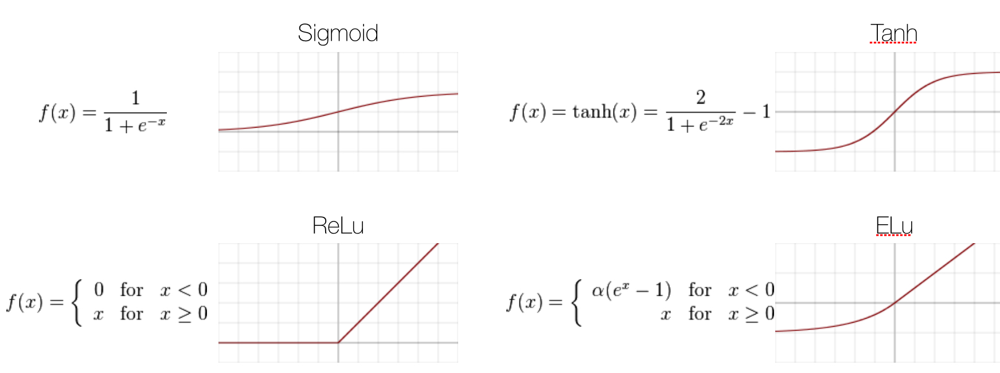
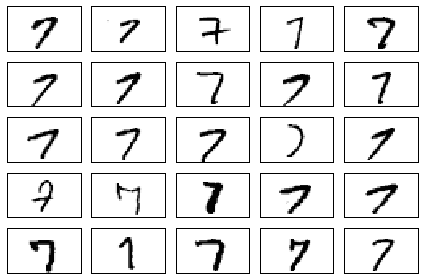
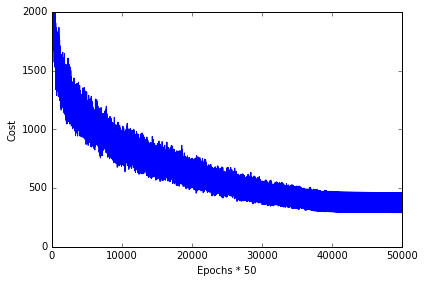
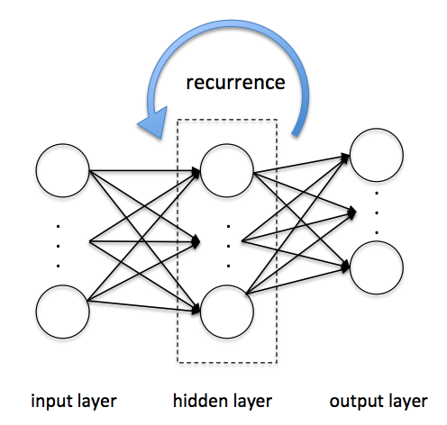

Sections
- Modeling complex functions with artificial neural networks
- Classifying handwritten digits
- Training an artificial neural network
- Debugging neural networks with gradient checking
- Other neural network architectures
Modeling complex functions with artificial neural networks
Single-layer neural network recap
linear combination
Linear combination，其中是bias 项。
activation functions

Introducing the multi-layer neural network architecture
Multi-layer perceptron (MLP)
MLP 可以看成多次线性转换和激活函数的堆叠, 下图结构可以写成
MLP learning procedure
- Starting at the input layer, we forward propagate the patterns of the training data through the network to generate an output.
- Based on the network's output, we calculate the error that we want to minimize using a cost function that we will describe later.
- We backpropagate the error, find its derivative with respect to each weight in the network, and update the model.
Activating a neural network via forward propagation
Loss functions
Training neural networks via backpropagation
Optimizaiton methods
Classifying handwritten digits
Obtaining the MNIST dataset
The MNIST dataset is publicly available at http://yann.lecun.com/exdb/mnist/ and consists of the following four parts:
- Training set images: train-images-idx3-ubyte.gz (9.9 MB, 47 MB unzipped, 60,000 samples)
- Training set labels: train-labels-idx1-ubyte.gz (29 KB, 60 KB unzipped, 60,000 labels)
- Test set images: t10k-images-idx3-ubyte.gz (1.6 MB, 7.8 MB, 10,000 samples)
- Test set labels: t10k-labels-idx1-ubyte.gz (5 KB, 10 KB unzipped, 10,000 labels)
In this section, we will only be working with a subset of MNIST, thus, we only need to download the training set images and training set labels. After downloading the files, I recommend unzipping the files using the Unix/Linux gzip tool from the terminal for efficiency, e.g., using the command
gzip *ubyte.gz -d
in your local MNIST download directory, or, using your favorite unzipping tool if you are working with a machine running on Microsoft Windows. The images are stored in byte form, and using the following function, we will read them into NumPy arrays that we will use to train our MLP.
import os
import struct
import numpy as np
def load_mnist(path, kind='train'):
"""Load MNIST data from `path`"""
labels_path = os.path.join(path,
'%s-labels-idx1-ubyte'
% kind)
images_path = os.path.join(path,
'%s-images-idx3-ubyte'
% kind)
with open(labels_path, 'rb') as lbpath:
magic, n = struct.unpack('>II',
lbpath.read(8))
labels = np.fromfile(lbpath,
dtype=np.uint8)
with open(images_path, 'rb') as imgpath:
magic, num, rows, cols = struct.unpack(">IIII",
imgpath.read(16))
images = np.fromfile(imgpath,
dtype=np.uint8).reshape(len(labels), 784)
return images, labels
X_train, y_train = load_mnist('data/mnist', kind='train')
print('Rows: %d, columns: %d' % (X_train.shape[0], X_train.shape[1]))
Rows: 60000, columns: 784
X_test, y_test = load_mnist('data/mnist', kind='t10k')
print('Rows: %d, columns: %d' % (X_test.shape[0], X_test.shape[1]))
Rows: 10000, columns: 784
Visualize the first digit of each class:
# import pandas as pd
# train = pd.read_csv('data/digit_recognizer/train.csv')
# train.shape
import matplotlib.pyplot as plt
%matplotlib inline
fig, ax = plt.subplots(nrows=2, ncols=5, sharex=True, sharey=True,)
ax = ax.flatten()
for i in range(10):
img = X_train[y_train == i][0].reshape(28, 28)
ax[i].imshow(img, cmap='Greys', interpolation='nearest')
ax[0].set_xticks([])
ax[0].set_yticks([])
plt.tight_layout()
# plt.savefig('./figures/mnist_all.png', dpi=300)
Visualize 25 different versions of "7":
fig, ax = plt.subplots(nrows=5, ncols=5, sharex=True, sharey=True,)
ax = ax.flatten()
for i in range(25):
img = X_train[y_train == 7][i].reshape(28, 28)
ax[i].imshow(img, cmap='Greys', interpolation='nearest')
ax[0].set_xticks([])
ax[0].set_yticks([])
plt.tight_layout()
# plt.savefig('./figures/mnist_7.png', dpi=300)

Uncomment the following lines to optionally save the data in CSV format. However, note that those CSV files will take up a substantial amount of storage space:
- train_img.csv 1.1 GB (gigabytes)
- train_labels.csv 1.4 MB (megabytes)
- test_img.csv 187.0 MB
- test_labels 144 KB (kilobytes)
# np.savetxt('train_img.csv', X_train, fmt='%i', delimiter=',')
# np.savetxt('train_labels.csv', y_train, fmt='%i', delimiter=',')
# X_train = np.genfromtxt('train_img.csv', dtype=int, delimiter=',')
# y_train = np.genfromtxt('train_labels.csv', dtype=int, delimiter=',')
# np.savetxt('test_img.csv', X_test, fmt='%i', delimiter=',')
# np.savetxt('test_labels.csv', y_test, fmt='%i', delimiter=',')
# X_test = np.genfromtxt('test_img.csv', dtype=int, delimiter=',')
# y_test = np.genfromtxt('test_labels.csv', dtype=int, delimiter=',')
Implementing a multi-layer perceptron
import numpy as np
from scipy.special import expit
import sys
class NeuralNetMLP(object):
""" Feedforward neural network / Multi-layer perceptron classifier.
Parameters
------------
n_output : int
Number of output units, should be equal to the
number of unique class labels.
n_features : int
Number of features (dimensions) in the target dataset.
Should be equal to the number of columns in the X array.
n_hidden : int (default: 30)
Number of hidden units.
l1 : float (default: 0.0)
Lambda value for L1-regularization.
No regularization if l1=0.0 (default)
l2 : float (default: 0.0)
Lambda value for L2-regularization.
No regularization if l2=0.0 (default)
epochs : int (default: 500)
Number of passes over the training set.
eta : float (default: 0.001)
Learning rate.
alpha : float (default: 0.0)
Momentum constant. Factor multiplied with the
gradient of the previous epoch t-1 to improve
learning speed
w(t) := w(t) - (grad(t) + alpha*grad(t-1))
decrease_const : float (default: 0.0)
Decrease constant. Shrinks the learning rate
after each epoch via eta / (1 + epoch*decrease_const)
shuffle : bool (default: False)
Shuffles training data every epoch if True to prevent circles.
minibatches : int (default: 1)
Divides training data into k minibatches for efficiency.
Normal gradient descent learning if k=1 (default).
random_state : int (default: None)
Set random state for shuffling and initializing the weights.
Attributes
-----------
cost_ : list
Sum of squared errors after each epoch.
"""
def __init__(self, n_output, n_features, n_hidden=30,
l1=0.0, l2=0.0, epochs=500, eta=0.001,
alpha=0.0, decrease_const=0.0, shuffle=True,
minibatches=1, random_state=None):
np.random.seed(random_state)
self.n_output = n_output
self.n_features = n_features
self.n_hidden = n_hidden
self.w1, self.w2 = self._initialize_weights()
self.l1 = l1
self.l2 = l2
self.epochs = epochs
self.eta = eta
self.alpha = alpha
self.decrease_const = decrease_const
self.shuffle = shuffle
self.minibatches = minibatches
def _encode_labels(self, y, k):
"""Encode labels into one-hot representation
Parameters
------------
y : array, shape = [n_samples]
Target values.
Returns
-----------
onehot : array, shape = (n_labels, n_samples)
"""
onehot = np.zeros((k, y.shape[0]))
for idx, val in enumerate(y):
onehot[val, idx] = 1.0
return onehot
def _initialize_weights(self):
"""Initialize weights with small random numbers."""
w1 = np.random.uniform(-1.0, 1.0, size=self.n_hidden*(self.n_features + 1))
w1 = w1.reshape(self.n_hidden, self.n_features + 1)
w2 = np.random.uniform(-1.0, 1.0, size=self.n_output*(self.n_hidden + 1))
w2 = w2.reshape(self.n_output, self.n_hidden + 1)
return w1, w2
def _sigmoid(self, z):
"""Compute logistic function (sigmoid)
Uses scipy.special.expit to avoid overflow
error for very small input values z.
"""
# return 1.0 / (1.0 + np.exp(-z))
return expit(z)
def _sigmoid_gradient(self, z):
"""Compute gradient of the logistic function"""
sg = self._sigmoid(z)
return sg * (1 - sg) # sigmoid 函数的导数比较简单，就是 sg * (1-sg)
def _add_bias_unit(self, X, how='column'):
"""Add bias unit (column or row of 1s) to array at index 0"""
if how == 'column':
X_new = np.ones((X.shape[0], X.shape[1]+1))
X_new[:, 1:] = X
elif how == 'row':
X_new = np.ones((X.shape[0]+1, X.shape[1]))
X_new[1:, :] = X
else:
raise AttributeError('`how` must be `column` or `row`')
return X_new
def _feedforward(self, X, w1, w2):
"""Compute feedforward step
Parameters
-----------
X : array, shape = [n_samples, n_features]
Input layer with original features.
w1 : array, shape = [n_hidden_units, n_features]
Weight matrix for input layer -> hidden layer.
w2 : array, shape = [n_output_units, n_hidden_units]
Weight matrix for hidden layer -> output layer.
Returns
----------
a1 : array, shape = [n_samples, n_features+1]
Input values with bias unit.
z2 : array, shape = [n_hidden, n_samples]
Net input of hidden layer.
a2 : array, shape = [n_hidden+1, n_samples]
Activation of hidden layer.
z3 : array, shape = [n_output_units, n_samples]
Net input of output layer.
a3 : array, shape = [n_output_units, n_samples]
Activation of output layer.
"""
a1 = self._add_bias_unit(X, how='column')
z2 = w1.dot(a1.T)
a2 = self._sigmoid(z2)
a2 = self._add_bias_unit(a2, how='row')
z3 = w2.dot(a2)
a3 = self._sigmoid(z3)
return a1, z2, a2, z3, a3
def _L2_reg(self, lambda_, w1, w2):
"""Compute L2-regularization cost"""
return (lambda_/2.0) * (np.sum(w1[:, 1:] ** 2) + np.sum(w2[:, 1:] ** 2))
def _L1_reg(self, lambda_, w1, w2):
"""Compute L1-regularization cost"""
return (lambda_/2.0) * (np.abs(w1[:, 1:]).sum() + np.abs(w2[:, 1:]).sum())
def _get_cost(self, y_enc, output, w1, w2):
"""Compute cost function.
y_enc : array, shape = (n_labels, n_samples)
one-hot encoded class labels.
output : array, shape = [n_output_units, n_samples]
Activation of the output layer (feedforward)
w1 : array, shape = [n_hidden_units, n_features]
Weight matrix for input layer -> hidden layer.
w2 : array, shape = [n_output_units, n_hidden_units]
Weight matrix for hidden layer -> output layer.
Returns
---------
cost : float
Regularized cost.
"""
term1 = -y_enc * (np.log(output))
term2 = (1 - y_enc) * np.log(1 - output)
cost = np.sum(term1 - term2) # 交互熵
L1_term = self._L1_reg(self.l1, w1, w2)
L2_term = self._L2_reg(self.l2, w1, w2)
cost = cost + L1_term + L2_term
return cost
def _get_gradient(self, a1, a2, a3, z2, y_enc, w1, w2):
""" Compute gradient step using backpropagation.
Parameters
------------
a1 : array, shape = [n_samples, n_features+1]
Input values with bias unit.
a2 : array, shape = [n_hidden+1, n_samples]
Activation of hidden layer.
a3 : array, shape = [n_output_units, n_samples]
Activation of output layer.
z2 : array, shape = [n_hidden, n_samples]
Net input of hidden layer.
y_enc : array, shape = (n_labels, n_samples)
one-hot encoded class labels.
w1 : array, shape = [n_hidden_units, n_features]
Weight matrix for input layer -> hidden layer.
w2 : array, shape = [n_output_units, n_hidden_units]
Weight matrix for hidden layer -> output layer.
Returns
---------
grad1 : array, shape = [n_hidden_units, n_features]
Gradient of the weight matrix w1.
grad2 : array, shape = [n_output_units, n_hidden_units]
Gradient of the weight matrix w2.
"""
# backpropagation
sigma3 = a3 - y_enc
z2 = self._add_bias_unit(z2, how='row')
sigma2 = w2.T.dot(sigma3) * self._sigmoid_gradient(z2)
sigma2 = sigma2[1:, :]
grad1 = sigma2.dot(a1)
grad2 = sigma3.dot(a2.T)
# regularize
grad1[:, 1:] += (w1[:, 1:] * (self.l1 + self.l2))
grad2[:, 1:] += (w2[:, 1:] * (self.l1 + self.l2))
return grad1, grad2
def predict(self, X):
"""Predict class labels
Parameters
-----------
X : array, shape = [n_samples, n_features]
Input layer with original features.
Returns:
----------
y_pred : array, shape = [n_samples]
Predicted class labels.
"""
if len(X.shape) != 2:
raise AttributeError('X must be a [n_samples, n_features] array.\n'
'Use X[:,None] for 1-feature classification,'
'\nor X[[i]] for 1-sample classification')
a1, z2, a2, z3, a3 = self._feedforward(X, self.w1, self.w2)
y_pred = np.argmax(z3, axis=0)
return y_pred
def fit(self, X, y, print_progress=False):
""" Learn weights from training data.
Parameters
-----------
X : array, shape = [n_samples, n_features]
Input layer with original features.
y : array, shape = [n_samples]
Target class labels.
print_progress : bool (default: False)
Prints progress as the number of epochs
to stderr.
Returns:
----------
self
"""
self.cost_ = []
X_data, y_data = X.copy(), y.copy()
y_enc = self._encode_labels(y, self.n_output)
delta_w1_prev = np.zeros(self.w1.shape)
delta_w2_prev = np.zeros(self.w2.shape)
for i in range(self.epochs):
# adaptive learning rate
self.eta /= (1 + self.decrease_const*i)
if print_progress:
sys.stderr.write('\rEpoch: %d/%d' % (i+1, self.epochs))
sys.stderr.flush()
if self.shuffle:
idx = np.random.permutation(y_data.shape[0])
X_data, y_data = X_data[idx], y_data[idx]
mini = np.array_split(range(y_data.shape[0]), self.minibatches)
for idx in mini:
# feedforward
a1, z2, a2, z3, a3 = self._feedforward(X[idx], self.w1, self.w2)
cost = self._get_cost(y_enc=y_enc[:, idx],
output=a3,
w1=self.w1,
w2=self.w2)
self.cost_.append(cost)
# compute gradient via backpropagation
grad1, grad2 = self._get_gradient(a1=a1, a2=a2,
a3=a3, z2=z2,
y_enc=y_enc[:, idx],
w1=self.w1,
w2=self.w2)
delta_w1, delta_w2 = self.eta * grad1, self.eta * grad2
self.w1 -= (delta_w1 + (self.alpha * delta_w1_prev))
self.w2 -= (delta_w2 + (self.alpha * delta_w2_prev))
delta_w1_prev, delta_w2_prev = delta_w1, delta_w2
return self
Training an artificial neural network
nn = NeuralNetMLP(n_output=10,
n_features=X_train.shape[1],
n_hidden=50,
l2=0.1,
l1=0.0,
epochs=1000,
eta=0.001,
alpha=0.001,
decrease_const=0.00001,
minibatches=50,
random_state=1)
nn.fit(X_train, y_train, print_progress=True)
Epoch: 1000/1000
<__main__.NeuralNetMLP at 0x11854e7d0>
plt.plot(range(len(nn.cost_)), nn.cost_)
plt.ylim([0, 2000])
plt.ylabel('Cost')
plt.xlabel('Epochs * 50')
plt.tight_layout()
# plt.savefig('./figures/cost.png', dpi=300)

batches = np.array_split(range(len(nn.cost_)), 1000)
cost_ary = np.array(nn.cost_)
cost_avgs = [np.mean(cost_ary[i]) for i in batches]
plt.plot(range(len(cost_avgs)), cost_avgs, color='red')
plt.ylim([0, 2000])
plt.ylabel('Cost')
plt.xlabel('Epochs')
plt.tight_layout();
#plt.savefig('./figures/cost2.png', dpi=300)

y_train_pred = nn.predict(X_train)
acc = np.sum(y_train == y_train_pred, axis=0) / X_train.shape[0]
print('Training accuracy: %.2f%%' % (acc * 100))
Training accuracy: 0.00%
y_test_pred = nn.predict(X_test)
acc = np.sum(y_test == y_test_pred, axis=0) / X_test.shape[0]
print('Training accuracy: %.2f%%' % (acc * 100))
Training accuracy: 0.00%
miscl_img = X_test[y_test != y_test_pred][:25]
correct_lab = y_test[y_test != y_test_pred][:25]
miscl_lab= y_test_pred[y_test != y_test_pred][:25]
fig, ax = plt.subplots(nrows=5, ncols=5, sharex=True, sharey=True,)
ax = ax.flatten()
for i in range(25):
img = miscl_img[i].reshape(28, 28)
ax[i].imshow(img, cmap='Greys', interpolation='nearest')
ax[i].set_title('%d) t: %d p: %d' % (i+1, correct_lab[i], miscl_lab[i]))
ax[0].set_xticks([])
ax[0].set_yticks([])
plt.tight_layout()
# plt.savefig('./figures/mnist_miscl.png', dpi=300)
plt.show()
Debugging neural networks with gradient checking
import numpy as np
from scipy.special import expit
import sys
class MLPGradientCheck(object):
""" Feedforward neural network / Multi-layer perceptron classifier.
Parameters
------------
n_output : int
Number of output units, should be equal to the
number of unique class labels.
n_features : int
Number of features (dimensions) in the target dataset.
Should be equal to the number of columns in the X array.
n_hidden : int (default: 30)
Number of hidden units.
l1 : float (default: 0.0)
Lambda value for L1-regularization.
No regularization if l1=0.0 (default)
l2 : float (default: 0.0)
Lambda value for L2-regularization.
No regularization if l2=0.0 (default)
epochs : int (default: 500)
Number of passes over the training set.
eta : float (default: 0.001)
Learning rate.
alpha : float (default: 0.0)
Momentum constant. Factor multiplied with the
gradient of the previous epoch t-1 to improve
learning speed
w(t) := w(t) - (grad(t) + alpha*grad(t-1))
decrease_const : float (default: 0.0)
Decrease constant. Shrinks the learning rate
after each epoch via eta / (1 + epoch*decrease_const)
shuffle : bool (default: False)
Shuffles training data every epoch if True to prevent circles.
minibatches : int (default: 1)
Divides training data into k minibatches for efficiency.
Normal gradient descent learning if k=1 (default).
random_state : int (default: None)
Set random state for shuffling and initializing the weights.
Attributes
-----------
cost_ : list
Sum of squared errors after each epoch.
"""
def __init__(self, n_output, n_features, n_hidden=30,
l1=0.0, l2=0.0, epochs=500, eta=0.001,
alpha=0.0, decrease_const=0.0, shuffle=True,
minibatches=1, random_state=None):
np.random.seed(random_state)
self.n_output = n_output
self.n_features = n_features
self.n_hidden = n_hidden
self.w1, self.w2 = self._initialize_weights()
self.l1 = l1
self.l2 = l2
self.epochs = epochs
self.eta = eta
self.alpha = alpha
self.decrease_const = decrease_const
self.shuffle = shuffle
self.minibatches = minibatches
def _encode_labels(self, y, k):
"""Encode labels into one-hot representation
Parameters
------------
y : array, shape = [n_samples]
Target values.
Returns
-----------
onehot : array, shape = (n_labels, n_samples)
"""
onehot = np.zeros((k, y.shape[0]))
for idx, val in enumerate(y):
onehot[val, idx] = 1.0
return onehot
def _initialize_weights(self):
"""Initialize weights with small random numbers."""
w1 = np.random.uniform(-1.0, 1.0,
size=self.n_hidden*(self.n_features + 1))
w1 = w1.reshape(self.n_hidden, self.n_features + 1)
w2 = np.random.uniform(-1.0, 1.0,
size=self.n_output*(self.n_hidden + 1))
w2 = w2.reshape(self.n_output, self.n_hidden + 1)
return w1, w2
def _sigmoid(self, z):
"""Compute logistic function (sigmoid)
Uses scipy.special.expit to avoid overflow
error for very small input values z.
"""
# return 1.0 / (1.0 + np.exp(-z))
return expit(z)
def _sigmoid_gradient(self, z):
"""Compute gradient of the logistic function"""
sg = self._sigmoid(z)
return sg * (1.0 - sg)
def _add_bias_unit(self, X, how='column'):
"""Add bias unit (column or row of 1s) to array at index 0"""
if how == 'column':
X_new = np.ones((X.shape[0], X.shape[1] + 1))
X_new[:, 1:] = X
elif how == 'row':
X_new = np.ones((X.shape[0]+1, X.shape[1]))
X_new[1:, :] = X
else:
raise AttributeError('`how` must be `column` or `row`')
return X_new
def _feedforward(self, X, w1, w2):
"""Compute feedforward step
Parameters
-----------
X : array, shape = [n_samples, n_features]
Input layer with original features.
w1 : array, shape = [n_hidden_units, n_features]
Weight matrix for input layer -> hidden layer.
w2 : array, shape = [n_output_units, n_hidden_units]
Weight matrix for hidden layer -> output layer.
Returns
----------
a1 : array, shape = [n_samples, n_features+1]
Input values with bias unit.
z2 : array, shape = [n_hidden, n_samples]
Net input of hidden layer.
a2 : array, shape = [n_hidden+1, n_samples]
Activation of hidden layer.
z3 : array, shape = [n_output_units, n_samples]
Net input of output layer.
a3 : array, shape = [n_output_units, n_samples]
Activation of output layer.
"""
a1 = self._add_bias_unit(X, how='column')
z2 = w1.dot(a1.T)
a2 = self._sigmoid(z2)
a2 = self._add_bias_unit(a2, how='row')
z3 = w2.dot(a2)
a3 = self._sigmoid(z3)
return a1, z2, a2, z3, a3
def _L2_reg(self, lambda_, w1, w2):
"""Compute L2-regularization cost"""
return (lambda_/2.0) * (np.sum(w1[:, 1:] ** 2) +
np.sum(w2[:, 1:] ** 2))
def _L1_reg(self, lambda_, w1, w2):
"""Compute L1-regularization cost"""
return (lambda_/2.0) * (np.abs(w1[:, 1:]).sum() +
np.abs(w2[:, 1:]).sum())
def _get_cost(self, y_enc, output, w1, w2):
"""Compute cost function.
Parameters
----------
y_enc : array, shape = (n_labels, n_samples)
one-hot encoded class labels.
output : array, shape = [n_output_units, n_samples]
Activation of the output layer (feedforward)
w1 : array, shape = [n_hidden_units, n_features]
Weight matrix for input layer -> hidden layer.
w2 : array, shape = [n_output_units, n_hidden_units]
Weight matrix for hidden layer -> output layer.
Returns
---------
cost : float
Regularized cost.
"""
term1 = -y_enc * (np.log(output))
term2 = (1.0 - y_enc) * np.log(1.0 - output)
cost = np.sum(term1 - term2)
L1_term = self._L1_reg(self.l1, w1, w2)
L2_term = self._L2_reg(self.l2, w1, w2)
cost = cost + L1_term + L2_term
return cost
def _get_gradient(self, a1, a2, a3, z2, y_enc, w1, w2):
""" Compute gradient step using backpropagation.
Parameters
------------
a1 : array, shape = [n_samples, n_features+1]
Input values with bias unit.
a2 : array, shape = [n_hidden+1, n_samples]
Activation of hidden layer.
a3 : array, shape = [n_output_units, n_samples]
Activation of output layer.
z2 : array, shape = [n_hidden, n_samples]
Net input of hidden layer.
y_enc : array, shape = (n_labels, n_samples)
one-hot encoded class labels.
w1 : array, shape = [n_hidden_units, n_features]
Weight matrix for input layer -> hidden layer.
w2 : array, shape = [n_output_units, n_hidden_units]
Weight matrix for hidden layer -> output layer.
Returns
---------
grad1 : array, shape = [n_hidden_units, n_features]
Gradient of the weight matrix w1.
grad2 : array, shape = [n_output_units, n_hidden_units]
Gradient of the weight matrix w2.
"""
# backpropagation
sigma3 = a3 - y_enc
z2 = self._add_bias_unit(z2, how='row')
sigma2 = w2.T.dot(sigma3) * self._sigmoid_gradient(z2)
sigma2 = sigma2[1:, :]
grad1 = sigma2.dot(a1)
grad2 = sigma3.dot(a2.T)
# regularize
grad1[:, 1:] += (w1[:, 1:] * (self.l1 + self.l2))
grad2[:, 1:] += (w2[:, 1:] * (self.l1 + self.l2))
return grad1, grad2
def _gradient_checking(self, X, y_enc, w1, w2, epsilon, grad1, grad2):
""" Apply gradient checking (for debugging only)
Returns
---------
relative_error : float
Relative error between the numerically
approximated gradients and the backpropagated gradients.
"""
num_grad1 = np.zeros(np.shape(w1))
epsilon_ary1 = np.zeros(np.shape(w1))
for i in range(w1.shape[0]):
for j in range(w1.shape[1]):
epsilon_ary1[i, j] = epsilon
a1, z2, a2, z3, a3 = self._feedforward(X,
w1 - epsilon_ary1, w2)
cost1 = self._get_cost(y_enc, a3, w1-epsilon_ary1, w2)
a1, z2, a2, z3, a3 = self._feedforward(X,
w1 + epsilon_ary1, w2)
cost2 = self._get_cost(y_enc, a3, w1 + epsilon_ary1, w2)
num_grad1[i, j] = (cost2 - cost1) / (2.0 * epsilon)
epsilon_ary1[i, j] = 0
num_grad2 = np.zeros(np.shape(w2))
epsilon_ary2 = np.zeros(np.shape(w2))
for i in range(w2.shape[0]):
for j in range(w2.shape[1]):
epsilon_ary2[i, j] = epsilon
a1, z2, a2, z3, a3 = self._feedforward(X, w1,
w2 - epsilon_ary2)
cost1 = self._get_cost(y_enc, a3, w1, w2 - epsilon_ary2)
a1, z2, a2, z3, a3 = self._feedforward(X, w1,
w2 + epsilon_ary2)
cost2 = self._get_cost(y_enc, a3, w1, w2 + epsilon_ary2)
num_grad2[i, j] = (cost2 - cost1) / (2.0 * epsilon)
epsilon_ary2[i, j] = 0
num_grad = np.hstack((num_grad1.flatten(), num_grad2.flatten()))
grad = np.hstack((grad1.flatten(), grad2.flatten()))
norm1 = np.linalg.norm(num_grad - grad)
norm2 = np.linalg.norm(num_grad)
norm3 = np.linalg.norm(grad)
relative_error = norm1 / (norm2 + norm3)
return relative_error
def predict(self, X):
"""Predict class labels
Parameters
-----------
X : array, shape = [n_samples, n_features]
Input layer with original features.
Returns:
----------
y_pred : array, shape = [n_samples]
Predicted class labels.
"""
if len(X.shape) != 2:
raise AttributeError('X must be a [n_samples, n_features] array.\n'
'Use X[:,None] for 1-feature classification,'
'\nor X[[i]] for 1-sample classification')
a1, z2, a2, z3, a3 = self._feedforward(X, self.w1, self.w2)
y_pred = np.argmax(z3, axis=0)
return y_pred
def fit(self, X, y, print_progress=False):
""" Learn weights from training data.
Parameters
-----------
X : array, shape = [n_samples, n_features]
Input layer with original features.
y : array, shape = [n_samples]
Target class labels.
print_progress : bool (default: False)
Prints progress as the number of epochs
to stderr.
Returns:
----------
self
"""
self.cost_ = []
X_data, y_data = X.copy(), y.copy()
y_enc = self._encode_labels(y, self.n_output)
delta_w1_prev = np.zeros(self.w1.shape)
delta_w2_prev = np.zeros(self.w2.shape)
for i in range(self.epochs):
# adaptive learning rate
self.eta /= (1 + self.decrease_const*i)
if print_progress:
sys.stderr.write('\rEpoch: %d/%d' % (i+1, self.epochs))
sys.stderr.flush()
if self.shuffle:
idx = np.random.permutation(y_data.shape[0])
X_data, y_enc = X_data[idx], y_enc[idx]
mini = np.array_split(range(y_data.shape[0]), self.minibatches)
for idx in mini:
# feedforward
a1, z2, a2, z3, a3 = self._feedforward(X[idx],
self.w1,
self.w2)
cost = self._get_cost(y_enc=y_enc[:, idx],
output=a3,
w1=self.w1,
w2=self.w2)
self.cost_.append(cost)
# compute gradient via backpropagation
grad1, grad2 = self._get_gradient(a1=a1, a2=a2,
a3=a3, z2=z2,
y_enc=y_enc[:, idx],
w1=self.w1,
w2=self.w2)
# start gradient checking
grad_diff = self._gradient_checking(X=X_data[idx],
y_enc=y_enc[:, idx],
w1=self.w1,
w2=self.w2,
epsilon=1e-5,
grad1=grad1,
grad2=grad2)
if grad_diff <= 1e-7:
print('Ok: %s' % grad_diff)
elif grad_diff <= 1e-4:
print('Warning: %s' % grad_diff)
else:
print('PROBLEM: %s' % grad_diff)
# update weights; [alpha * delta_w_prev] for momentum learning
delta_w1, delta_w2 = self.eta * grad1, self.eta * grad2
self.w1 -= (delta_w1 + (self.alpha * delta_w1_prev))
self.w2 -= (delta_w2 + (self.alpha * delta_w2_prev))
delta_w1_prev, delta_w2_prev = delta_w1, delta_w2
return self
nn_check = MLPGradientCheck(n_output=10,
n_features=X_train.shape[1],
n_hidden=10,
l2=0.0,
l1=0.0,
epochs=10,
eta=0.001,
alpha=0.0,
decrease_const=0.0,
minibatches=1,
shuffle=False,
random_state=1)
nn_check.fit(X_train[:5], y_train[:5], print_progress=False)
Ok: 2.59699590792e-10
Ok: 2.9553528175e-10
Ok: 2.38060754028e-10
Ok: 3.07760791451e-10
Ok: 3.38742154283e-10
Ok: 3.57890531092e-10
Ok: 2.17697902147e-10
Ok: 2.36171066791e-10
Ok: 3.42158139292e-10
Ok: 2.10657747496e-10
<__main__.MLPGradientCheck at 0x1288634d0>
Other neural network architectures
Convolutional Neural Networks
Recurrent Neural Networks
